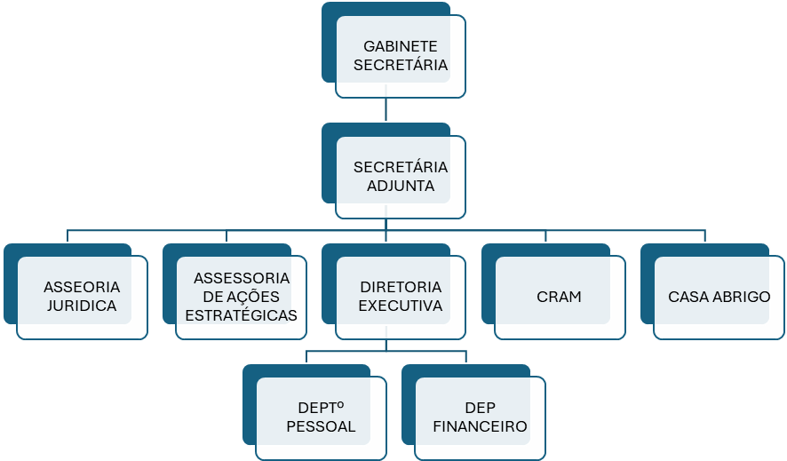

Sobre a SMPM
A Secretaria Municipal de Políticas para Mulher (SMPM) desenvolve e articula políticas públicas, através de planos, programas e projetos, ampliando-os e monitorando-os de forma que viabilizem os direitos da mulher, garantindo-lhe cidadania. A SMPM estimula e promove em parceria com os órgãos municipais, privados e sociedade geral, ações de prevenção e combate a todas as formas de violação dos direitos humanos das mulheres.
Informações de Contato
- Atendimento: 8h às 18h de segunda a sexta
- Email: secretariadamulheritz@gmail.com
- Contato: (99) 99123-4638
- Plantão: 24 horas
- Endereço: Rua Rafael de Almeida Ribeiro, 600 - Bairro São Salvador, Imperatriz - MA
CRAM - Centro de Referência de Atendimento à Mulher
- Endereço: Rua Sousa Lima nº 54, Centro (entre ruas Rui Barbosa e Urbano Santos)
- Telefone: (99) 99193 - 1717
Dados da Secretaria
- Funcionários Efetivos: 18
- Agente Político: 1
- Funcionários Nomeados: 20
- Funcionários Contratados: 2
- Folha Bruta: R$ 147.686,51
- Maior Salário: Ass. Projetos Especiais - R$ 5.864,80
- Menor Salário: Ass. de Gabinete III - R$ 1.412,00
- Salário do Secretário: R$ 14.800,00
Organograma
- SMPM - Políticas para Mulher
- GAB - Gabinete da Mulher
- GAB-CADRN - Casa Abrigo Dra. Ruth Noleto
- GAB-CRAM - Centro de Referência de Atendimento à Mulher
- GAB - Gabinete da Mulher